Прорачун моделирање и цртежи ремен(клинасти ремен)- ог пара шк. 2022/23. год.
Израчунати потребне параметре и моделирати ремени пар на основу улазних података:
Снага електромотора:  18.5
18.5 
Број обртаја електромотора:  1450
1450 
Потребан број обртаја гоњене ременице: 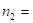 710
Осно растојање: 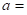 800 
Угао преносника: 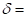 30 °
Равномеран рад преносника.
Моделирати ремени преносник снаге, урадити цртеже ременица и склопа.
Литература - извор знања:
Машински елементи II - Спасоје Драпић
Нека је очекивана брзина ремена:
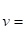 20 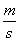
Носивост једног ремена (Т 4.24):
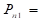 6
Нека је оптималан број ремена 3 до 5. Привремено усвајамо профил "C" за који из Т 4.15 имамо:
Минималан
подеони
пречник: 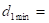 300
Усвајам:  300
300
Пречник подеоног пречника гоњене ременице рачунамо:
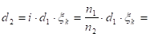 603.486
Фактор проклизавања: 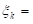 0.985 - Теорија
Усвајам (Стр. 161. М.Е. II):  630
630
Број обртаја гоњене ременице рачунамо:
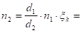 680.119
Обухватни (обвојни) угао рачунамо на основу израза:
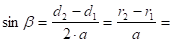 0.20625
 0.207741 rad
0.207741 rad
11.903 °
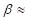 12 °
Обухватни угао износи: 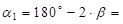 156 °
Фактор обухватног (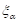) угла из Т 4.20, рачунамо интерполацијом:
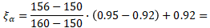 0.938
Фактор врсте и положаја (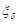) из Т 4.22, рачунамо интерполацијом:
За положај преносника: 30 °
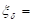 0.933
За брзину ремена:  22.777
22.777
Носивост једног ремена за профил "C" из Т 4.24 износи:
6.1
Стр. 170 фактор
смањеног
пречника за: 
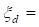 1
Број потребних ремена:
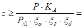 3.464
усвајам:  4
4
Фактор неравномерности оптерећења из (Т 4.18):
За равномеран рад преносника према услову задатка: 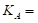 1
Дужина ремена:
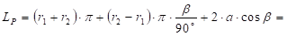 3094.994
Усвајам: 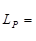 3100 - Стр. 160. M.E. II
Осно растојање рачунамо:
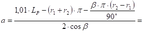 818.399
Обртни момент рачунамо:
 121835.853
121835.853 
Обимну силу рачунамо:
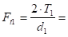 812.239 
Оптерећење вратила:
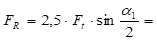 1986.224
Фактор неравномерности оптерећења из (Т 4.18):
За равномеран рад преносника према услову задатка: 1
Учестаност промене напона савијања ремена:
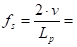 14.695 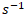
Обухватни (обвојни) угао:
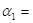 2.723 rad
Коефицијент трења, за клинасте ремене:
 0.3 - Теорија
0.3 - Теорија
Сила у вучном краку ремена се рачуна на основу релације:
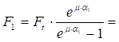 1455.201
Површина попречног пресека ремена - површина трапеза профила "C 22x14" Т 4.15:
Највећа ширина трапеза: 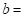 22
Висина трапеза (ремена):  14
14
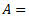 236.662 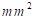
Напон затезања у вучном краку рачунамо:
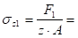 1.537 
Напон затезања од центрифугалне силе рачунамо:
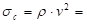 648463.852 
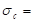 0.648
Густина ремена: 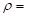 1250  - Теорија
- Теорија
Напон савијања преко погонске ременице рачунамо:
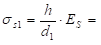 2.333
Модул еластичности на савијање: 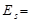 50 - Теорија
Укупан максималан напон рачунамо:
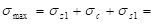 4.519
Број промена напона савијања рачунамо:
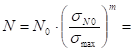 575628032.4
Број промена напона савијања добијен испитивањем (Т 4.16):
10000000
Динамичка издржљивост ремена добијена испитивањем (Т 4.16):
7.5
Експонент једначине (Т 4.16):
8
Радни век ремена:
39172902.74
10881.362 
Велико расипање вредности динамичке издржљивости каиша и ремена које је последица одступања структура и својства материјала чине наведену проверу века трајања приближном иако је теоријски најисправнија.
Да би се повећала тачност прорачуна треба по могућности користити податке добијене непосредним испитивањима самих произвођача или сопственим испитивањем одговарајућег материјала за одређене радне услове.
Погонско вратило
Снага која се преноси:
18.5
Број обртаја:
1450
Угаона брзина:
 151.844
151.844 
Обртни момент:
 121835.853
121835.853

За материјал вратила Č.0545 из Т 2.3 М.Е.I усвајамо трајну динамичку чврстоћу на једносмерну промену напона за случај увијања:
 200
200
Напон увијања мора бити мањи од дозвољеног напона.

Дозвољени напон увијања:
 66.667
66.667
Степен сигурности усвајамо из T2.5:
 3
3

Називни пречник вратила:
21.035
на израчунати пречник вратила додаје се дубина жљеба за клин и стандардизује се пречник вратила:
израчунатом
пречнику вратила: 21.035 одговара дубина жлеба за клин:
 3.5 , те добијамо потребан пречник вратила:
3.5 , те добијамо потребан пречник вратила:

Стандардне дужине клинова: 20, 25, 28, 32, 36, 40, 45, 50, 56, 63, 70, 80, 90, 100, 110, 125, 140, 180, 200, ... , 400, а за нормалне клинове и још: 5, 8, 10, 12, 15, 16, 18.
 24.535
24.535
како се из T 0.1 усвајају вредности за ред R5, R10, R20, R40, па тек на крају подешени бројеви, то се усваја:
пречник погонског вратила:
 60
60

T 4.7 M.E.II
називном пречнику од 60 одговара клин:
18
11
6.8
 0.5
0.5
провера исправности усвојеног клина:
 53.2 >
53.2 >  21.035
21.035
Гоњено вратило
Степен искоришћења се рачуна по обрасцу:

Степен искоришћења за ремене парове:
 0.96
0.96
Преносни однос:
 2.132
2.132
Обртни момент на погонском вратилу:
121835.853
Обртни момент на гоњеном вратилу износи:
 249361.502
249361.502
Напон увијања мора бити мањи од дозвољеног напона.
Називни пречник вратила:
 26.707
26.707
како се из T 0.1 усвајају вредности за ред R5, R10, R20, R40, па тек на крају подешени бројеви, то се усваја:
пречник гоњеног вратила:
71
T 4.7 M.E.II
називном пречнику од 71 одговара клин:
20
12
7.4
0.6
Стандардне дужине клинова: 20, 25, 28, 32, 36, 40, 45, 50, 56, 63, 70, 80, 90, 100, 110, 125, 140, 180, 200, ... , 400, а за нормалне клинове и још: 5, 8, 10, 12, 15, 16, 18.
провера исправности усвојеног клина:
63.6 > 26.707
Из Т 4.15 смо усвојили профил ремена "C 22x14", имамо следеће мере:
Највећа ширина трапеза: 22
Висина трапеза (ремена): 14
пречник подеоне кружнице: 300
5.7
Усвајам: 6
312
Венац и главчина се спајају плочом - стр. 161. М.Е. I. Усвајам дебљину плоче:
10
Пречник отвора за вратило:
60
Пречник главчине :
 120
120
Конструктивне мере:
19
5.6
14.3
усвајам: 15
25.5
17
 38 °
38 °
Из Т 4.15 смо усвојили профил ремена "C 22x14", имамо следеће мере:
Највећа ширина трапеза: 22
Висина трапеза (ремена): 14
пречник подеоне кружнице: 630
5.7
Усвајам: 6
642
Венац и главчина се спајају са 6 паока - стр. 161. М.Е. I. Усвајам дебљину паока близу главчине:
20
Дебљина паока близу венца ременице:
16
Висина елипсе паока близу главчине:
50
Висина елипсе паока близу венца ременице:
40
Пречник отвора за вратило:
71
Пречник главчине :
142
Конструктивне мере:
19
5.6
14.3
усвајам: 15
25.5
17
38 °